측량및지형공간정보기사 (2019-03-03 기출문제)
1과목: 측지학 및 위성측위시스템
1. 극에서 적도 지방으로 갈수록 중력의 변화에 대한 설명으로 옳은 것은?
- 적도 지방으로 갈수록 감소한다.
- 적도 지방으로 갈수록 증가한다.
- 중위도까지는 감소하다가 이후 증가한다.
- 중위도까지는 증가하다가 이후 감소한다.
(정답률: 74%)

2. 위도 36°16‘11“, 경도 127°12’7”에서 3차원 직각좌표의 X, Y좌표는? (단, 묘유면 곡률반경 v=6384.80km, 타원체고 h=2000m)
- X=4084.25km, Y=54⑤.95km
- X=4085.25km, Y=5406.95km
- X=-4085.25km, Y=5406.95km
- X=-3113.40km, Y=4101.47km
(정답률: 45%)
3. GNSS측량에서 이중주파수(dual frequency)를 채택하고 있는 가장 큰 이유는?
- 다중경로(multipath)오파를 제거할 수 있다.
- 전리충지연 효과를 제거할 수 있다.
- 대기 온도의 영향을 제거할 수 있다.
- 전파방해에 대응할 수 있다.
(정답률: 75%)
4. GPS를 이용한 기준점 측량에서 관측 전ㆍ후에 측정한 관측점에서 ARP(Antenna Reference Point)까지의 경사거리가 각각 147.2cm와 147.4cm이었고 안테나 반지름이 16.5cm이었다. ARP를 기준으로 APC(Antenna Phase Center)의 오프셋 높이방향으로 +1.32cm라면 기선해석에 사용해야할 안테나 고는?
- 145.⑤3cm
- 145.981cm
- 147.693cm
- 148.622cm
(정답률: 42%)
5. 표고를 결정하기 위해 수행하여야 하는 측량으로 짝지어진 것은?
- 다각측량, 중력측량
- 수준측량, 중력측량
- 수준측량, 지자기측량
- 다각측량, 지자기측량
(정답률: 75%)
6. 다음 중 위상의 궤도 요소에 속하지 않는 것은?
- 궤도 경사각
- 승교점 적경
- 궤도타원의 장반경
- 위성과 수신기 사이의 의사거리
(정답률: 73%)
7. 반송파(carrier)의 모호정수(ambiguity)가 포함되어 있지 않은 관측치는?
- 단일차분위상차
- 이중차분위상차
- 삼중차분위상차
- 무차분 위상
(정답률: 71%)
8. 지오이드와 타원체면과의 거리를 무엇이라고 하는가?
- 표고
- 정표고
- 타원체고
- 지오이드고
(정답률: 69%)
9. 지자기 측량에서 수평면 내에 작용하는 지자기력의 크기를 의미하는 것은?
- 편각
- 복각
- 수평분력
- 수직분력
(정답률: 63%)
10. GNSS측량에서 위성으로부터 송신되어 측위에 이용되는 신호는?
- 전파
- 음파
- 가시광선
- 적외선
(정답률: 84%)
11. 차분(Differencing)을 이용한 GNSS측량에 대한 설명으로 옳지 않은 것은?
- 공통된 위성으로부터 수신된 신호는 같은 궤도 오차를 가진다.
- 하나의 수신기에서 수신된 여러 위성에 대한 관측값은 동일한 수신기 시계오차를 가진다.
- 기지점과 미지점간의 거리가 짧다면 대기효과는 비슷하게 나타난다.
- 단일차분에 의해서 위성과 수신기의 시계오차를 동시에 제거할 수 있다.
(정답률: 60%)
12. 중력관측점과 지오이드면 사이의 질량을 고려한 중력이상은?
- 고도이상
- 부게이상
- 프리에어이상
- 위도이상
(정답률: 77%)
13. 지각 변동(운동)의 결정과 같이 정밀한 위치결정을 위하여 GNSS측량을 이용하는 경우에 대한 설명으로 틀린 것은?
- 오차를 제거하기 위하여 일반적으로 차분된 관측치를 사용한다.
- 정밀한 위치결정을 위하여 코드 신호를 사용한다.
- 상용보다는 학술용 자료처리 프로그램을 사용한다.
- 정확한 궤도정보인 정밀궤도력을 사용한다.
(정답률: 53%)
14. 지구의 물리적 형상을 나타내는 것으로 평균해수면을 육지까지 연장한 곡면을 무엇이라고 하는가?
- GRS80 타원체
- WGS84 타원체
- 지오이드
- 물리적 지표면
(정답률: 80%)
15. 지진파에 대한 설명 중 틀린 것은?
- S파는 고체와 액체 상태를 모두 통과한다.
- 지진파에는 P파, S파, L파가 있다.
- P파는 지진파 중 가장 빠르다.
- L파는 지표면을 따라 전파하는 표면파이다.
(정답률: 73%)
16. 구면삼각형에서 내각의 합이 180°을 넘게 되는데 그 차를 무엇이라 하는가?
- 세차
- 균시차
- 구과량
- 연직선편차
(정답률: 83%)
17. 다음 용어에 대한 설명으로 틀린 것은?
- 적도(equator) : 지구중심을 지나 자전축에 직교하는 평면과 지표면의 교선
- 위도(latitude) : 지표면상 한 점이 자오선과 이루는 각
- 평행성(parallels) : 적도와 나란한 평명과 지표면과의 교선
- 경도(longitude) : 그리니치를 지나는 자오선을 본초 나오선으로 하고 자오면이 만드는 적도면 상의 각 거리
(정답률: 57%)
18. 물리학적 측지학에 속하지 않은 것은?
- 탄성파 측정
- 지자기 측정
- 중력 측정
- 사진 측정
(정답률: 78%)
19. GNSS측량방법 중 가장 정밀한 위치결정방법으로 기준점측량이나 학술목적으로 주로 사용되는 방법은?
- 정지(Static)측량
- 이동(Kinematic)측량
- 네트워크 RTK(Real Time Kinematic)측량
- RTK(Real Time Kinematic)측량
(정답률: 75%)
20. 수준점을 이용하여 미지점의 정표고를 결정하기 위해 GPS levelling을 실시하였다. 수준점과 미지점 사이의 거리가 약 150m, 수준점의 정표고가 67.248m, 타원체고가 42.357m이고 미지점의 타원체고가 72.835m라고 할 때 미지점의 정표고는?
- 47.977m
- 97.726m
- 147.944m
- 197.357m
(정답률: 58%)
2과목: 응용측량
21. 하천의 수위 중 저수위에 대한 설명으로 옳은 것은?
- 1년을 통하여 355일, 이것보다 내려가지 않는 수위
- 1년을 통하여 275일, 이것보다 내려가지 않는 수위
- 1년을 통하여 185일, 이것보다 내려가지 않는 수위
- 1년을 통하여 125일, 이것보다 내려가지 않는 수위
(정답률: 62%)
22. 하천 측량에 대한 설명 중 옳지 않은 것은?
- 수위 관측소의 위치는 지천의 합류점 및 분류점으로서 수위의 변화가 뚜렷한 곳이 적당하다.
- 하천측량에서 수준측량을 할 때의 거리표는 하천의 중심에 직각 방향으로 설치한다.
- 심천측량은 하천의 수심 및 유수수분의 하저 상황을 조사하고 횡단면도를 제작하는 측량을 말한다.
- 하천 측량 시 처음에 할 일은 도상 조사로 유로상황, 지역면적, 지형지물, 토지지용 상황 등을 조사하여야 한다.
(정답률: 71%)
23. 그림과 같은 토지의 한 변 BC=52m 위의 점D과 AC=46m 위의 점E를 연결하여 △ABC의 면적을 이등분하기 위한 AE의 길이는? (단, m : n=1 : 1, BD=8m)
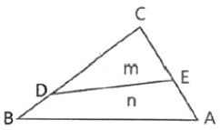
- 15.2m
- 18.8m
- 27.2m
- 29.8m
(정답률: 53%)
24. 노면폭 15m의 도로를 설계하기 위하여 그림과 같은 횡단면도를 얻었을 때 필요한 용지 폭 B는? (단, a=2m, 경사도는 1 : 1.5로 한다.)
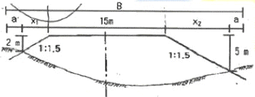
- 18.5m
- 20.1m
- 26.0m
- 29.5m
(정답률: 49%)
25. 터널측량에서 지상 측점과 터널 내부의 측점이 일치하도록 하는 측량을 무엇이라 하는가?
- 지하수준 측량
- 지하 측량
- 터널 내의 연결측량
- 지상 측량
(정답률: 78%)
26. 매개변수 A=150m인 클로소이드에 접속되는 원곡선의 반지름인 250m 일 때 단위클로소이드 길이(l)는?
- 0.571000
- 0.600000
- 1.258000
- 1.666667
(정답률: 56%)
27. 해안선 측량을 위한 방법에 속하지 않는 것은?
- 토탈스테이션 측량
- GNSS 측량
- 항공레이저 측량
- 해저면영상조사 측량
(정답률: 58%)
28. 단곡선 설치에 있어서 교점에 접근할 수 없어 그림과 같이 접선 위의 임의의 점 A', B'에서 접선과 이루는 각α, β와의 거리 L를 관측하였다. 곡선시점(A)을 정하기 위한
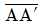
거리는? (단, α=23°, β=55°, L=120m, 곡선반지름=100m)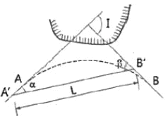
- 9.76m
- 19.52m
- 31.16m
- 62.32m
(정답률: 52%)
29. 보기의 터널측량 작업내용을 순서대로 열거한 것으로 가장 적합한 것은?
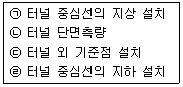
- ㉠-㉢-㉣-㉡
- ㉠-㉣-㉡-㉢
- ㉢-㉡-㉣-㉠
- ㉢-㉠-㉣-㉡
(정답률: 61%)
30. 그림과 같이 곡선으로 둘러싸인 지역의 심프슨(simpson) 제1법칙에 의한 면적은? (단, 단위는 m이다.)
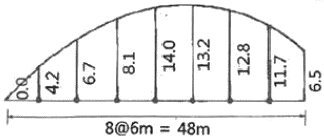
- 222.3m2
- 444.6m2
- 666.3m2
- 888.2m2
(정답률: 62%)
31. 수심이 H인 어느 하천의 유량측정을 위하여 수심과 유속을 관측한 결과가 표와 같다. 2구간(좌안으로부터의 거리 10~20m 구간)의 유량은?
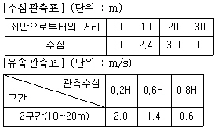
- 34.45m3/s
- 36.45m3/s
- 38.45m3/s
- 40.45m3/s
(정답률: 50%)
32. 노산의 중심 말뚝에 대하여 횡단측량을 실시한 결과 단면 1의 면적 A1=90m2, 단면2의 면적 A2=120m2이었다면 단면 1-2 간의 토량은? (단, 중심말뚝의 간격은 20m이다.)
- 2100m3
- 2500m3
- 3100m3
- 3500m3
(정답률: 52%)
33. 도로 종단측량에 의한 종단면도 작성에서 기입사항과 거리가 먼 것은?
- 측점간의 수평거리
- 각 측점의 지반고 및 B.M.점의 높이
- 횡단방향 지반고 및 중심말뚝간의 거리
- 측점에서의 계획고
(정답률: 49%)
34. 터널측량에 대한 설명으로 옳지 않은 것은?
- 터널 내의 곡선설치는 일반적으로 편각법에 의해 행한다.
- 터널 내 측량은 터널 내 중심선측량과 터널 내 수준측량으로 나눌 수 있다.
- 터널의 중심선측량은 삼각측량 또는 트래버스측량으로 행한다.
- 터널 내 측량에서는 기계의 십자선 및 표척 등에 조명이 필요하다.
(정답률: 58%)
35. 다음 중 수로기준점이 아닌 것은?
- 수로측량기준점
- 해안선기준점
- 기본수준점
- 영해기준점
(정답률: 48%)
36. 노선측량에 곡선을 설치할 떄 가장 먼저 결정하여야 할 것은?
- T.L.(접선길이)
- C.L.(곡선길이)
- B.C.(곡선시점)
- R(곡선반지름)
(정답률: 61%)
37. 단곡선 설치에 있어 도로기점에서 교점까지의 거리가 415.23m, 곡선반지름이 250m, 교각이 41°00‘일 때 시단현에 대한 편각은? (단, 중심말뚝의 간격은 20m이다.)
- 1°⑤‘25“
- 1°12‘04“
- 2°⑤‘25“
- 2°12‘04“
(정답률: 52%)
38. 하천측량에서 2점법으로 평균유속을 구할 때 선택해야 할 지점을 알맞은 것은?
- 수심(H)의 0.2H, 0.8H인 지점
- 수심(H)의 0.4H, 0.6H인 지점
- 수심(H)의 0.3H, 0.7H인 지점
- 수심(H)의 0.5H, 0.9H인 지점
(정답률: 69%)
39. 지하시설물에 대한 탐사 공정 순서로 옳은 것은?
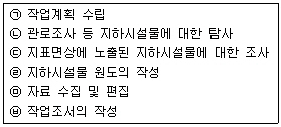
- ㉠→㉡→㉢→㉣→㉤→㉥
- ㉠→㉡→㉤→㉣→㉢→㉥
- ㉠→㉤→㉢→㉡→㉣→㉥
- ㉠→㉤→㉣→㉢→㉡→㉥
(정답률: 57%)
40. 완화곡선에 대한 설명으로 틀린 것은?
- 곡선반지름은 완화곡선이 시점에서 무한대이다.
- 완화곡선의 접선은 시점에서 직선에 접한다.
- 완화곡선의 접선은 종점에서 원호에 접한다.
- 완화곡선 종점의 캔트는 원곡선의 캔트와 역수관계이다.
(정답률: 60%)
3과목: 사진측량 및 원격탐사
41. 항공사진측량의 사진축척에 영향을 미치는 요소가 아닌 것은?
- 초점거리
- 촬영고도
- 평균표고
- 사진크기
(정답률: 60%)
42. 항공사진측량시 지상기준점(또는 표정기준점)의 선정 조건으로 틀린 것은?
- 사진 상의 명료한 점
- 상공에서 보이는 점
- 시간적인 변화가 없는 점
- 경사변환선 상의 점 또는 가상점
(정답률: 69%)
43. 길이가 23km인 1개 촬영경로(코스)를 촬영하는데 필요한 모델의 수는? (단, 사진축척 : 1 : 10000, 종종복도 : 60%, 사진크기 : 23cm×23cm이다.)
- 25
- 30
- 50
- 51
(정답률: 60%)
44. 항공사진 도화작업에서 표정(orientation)에 관한 설명으로 틀린 것은?
- 내부표정 - 초점거리의 조정 및 주점의 일치
- 상호표정 - 7개의 표정인자(λ, ø, Ω, K, CX, CY, CZ)
- 절대표정 - 축척, 경사의 조정 및 위치의 결정
- 접합표정 - 모델간, Strip간의 접합요소
(정답률: 66%)
45. 항공삼각측량 조정법 중 정확도가 가장 높은 것은?
- 독립모델(모형)법
- 스트립법(다항식법)
- 번들조정법(광속법)
- 도해법
(정답률: 61%)
46. 초점거리 15cm, 촬영경사각 2.7°인 평탄한 토지를 촬영한 항공사진이 있다. 이 사진에서 최대경사선상 연직점과 주점의 거리는?
- 4.3mm
- 6.0mm
- 7.1mm
- 7.9mm
(정답률: 55%)
47. 절대표정을 위한 기준점의 개수와 배치로 적합하지 않은 것은? (단, O는 수직기준점(Z), □는 수평기준점(X,Y), △는 3차원기준점(X,Y,Z)을 의미하여 대상지역은 거의 평면에 가깝다고 가정한다.)
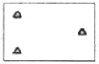
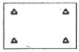
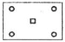
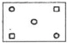
(정답률: 61%)
48. 아래와 같은 영상을 분석하지 위해 산림지역의 트레이닝 필드를 선정하였따. 트레이닝 필드로부터 산출되는 각 밴드의 평균값은?
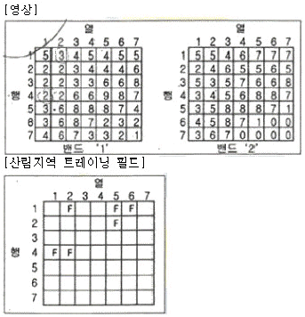
- 밴드 ‘1’=5.2, 밴드 ‘2’=3.3
- 밴드 ‘1’=3.3, 밴드 ‘2’=5.2
- 밴드 ‘1’=1.6, 밴드 ‘2’=1.2
- 밴드 ‘1’=1.2, 밴드 ‘2’=1.6
(정답률: 57%)
49. 표고 1000m에서 촬용한 축척 1:5000의 편위수정 사진이 있다. 지상연직점으로부터 400m 떨어진 곳에 있는 표고 100m의 산정(山頂)을 찍었을 경우 사진상의 기복변위는?
- 5mm
- 6mm
- 7mm
- 8mm
(정답률: 39%)
50. 항공사진측량에서 사진의 크기가 23cm×23cm이고 카메라의 초점거리가 15cm, 촬영고도가 4500m일 때 사진 한 장이 포함하는 면적은?
- 47.6km2
- 52.8km2
- 94.6km2
- 95.2km2
(정답률: 58%)
51. 사진측량 도화기의 C-계수(C-factor)에 관한 설명으로 옳은 것은?
- 도화기의 시간당 작업량을 나타내는 계수이다.
- 도화기의 도화 작업 면적에 따른 계수이다.
- 도화 지역 내의 지형의 비고를 결정하기 위한 값이다.
- C-계수를 이용하여 촬영고도에 따른 적정 등고선 간격을 구할 수 있다.
(정답률: 46%)
52. 항공사진을 입체시 할 경우에 발생하는 과고감과 관련이 없는 요소는?
- 기선길이
- 중복도
- 초점거리
- 지구곡률
(정답률: 63%)
53. 공선조건식에 대한 설명으로 옳지 않은 것은?
- 지상점, 영상점, 투영 중심이 하나의 직선상에 존재한다는 조건이다.
- 한 장의 사진에서 충분한 지상기준점이 주어진다면, 외부표정요소를 계산할 수 있다.
- 한 장의 사진에서 내부 및 외부표정요소가 주어진다면, 영상점에 투영된 지상점의 좌표를 계산할 수 있다.
- 한 장의 사진에서 내부 및 외부표정요소가 주어진다면, 지상점이 투영된 사진 상의 좌표를 계산할 수 있다.
(정답률: 47%)
54. 항공사진 또는 위성영상의 기하보정 과정에서 최종 결과영상을 제작하는데 필요한 재배열(resampling)방법 중 원천영상자료의 화소값의 변경을 방지할 수 있고 가장 계산이 빠른 방법은?
- Non-linear Interpolation
- Bilinear Interpolation
- Bicubic Interpolation
- Nearest-neighbor Interpolation
(정답률: 63%)
55. 원격탐사(Remote Sensing)의 자료변환 시스템 순서로 가장 적절한 것은?
- 자료수집 - 라디오 메트릭보정 - 자료압축 - 판독 및 응용
- 자료수집 - 자료압축 - 자료변환 - 판독 및 응용
- 자료변환 - 라디오 메트릭보정 - 자료수집 - 판독 및 응용
- 자료압축 - 자료수집 - 자료변환 - 판독 및 응용
(정답률: 59%)
56. 항공사진측량의 특징에 대한 설명으로 틀린 것은?
- 날씨 및 기상조건에 관계없이 측량이 가능하다.
- 넓은 지역에 대한 경제적이고 효율적인 측량방법이다.
- 외업에 대한 시간이 짧고 동일 모델 내의 정확도가 균일하다.
- 지형의 제약에 따른 접근이 어려운 곳의 측량이 가능하다.
(정답률: 69%)
57. 위성영상의 특성을 나타내기 위한 해상도에 해당되지 않는 것은?
- 분광해상도(spectral resolution)
- 복사해상도(radiometric resolution)
- 위상해상도(topology resolution)
- 주기해상도(temporal resolution)
(정답률: 42%)
58. 위성영상 중 지표면의 온도분포를 분석할 수 있는 것은?
- Landsat 위성의 TM 영상
- Landsat 위성의 RBV영상
- SPOT 위성의 HRV 영상
- 아리랑 위성의 EOC영상
(정답률: 63%)
59. 수치사진측량기법으로 DEM(Digital Elevation Model)을 자동으로 생성하려고 할 때, 다음 중 가장 적합한 영상은?
- 팬크로매틱 영상
- 에피폴라 영상
- 경사영상
- 모자이크 영상
(정답률: 42%)
60. 원격탐사 플랫폼에서 지상물체의 특성을 탐지하고 기록하기 위해 이용하는 전자기복사에너지 중 파장이 긴 것부터 짧은 것의 순서로 옳게 나열된 것은?
- Visble Blue -Visible Red - Visible Green
- Visible Red - Visible Green - Visible Blue
- Visible Blue - Mid Infrared - Thermal Infrared
- Visible Red - Mid Infrared - Thermal Infrared
(정답률: 70%)
4과목: 지리정보시스템
61. 지리정보시스템(GIS)이 CAD 시스템과 차별화되는 주요 기능은?
- 대용량의 그래픽 정보를 다룬다.
- 필요한 도형정보만을 추출할 수 있다.
- 다양한 축척으로 자료를 출력할 수 있다.
- 위상구조를 바탕으로 공간분석 능력을 갖추었다.
(정답률: 65%)
62. 지리정보시스템(GIS)의 자료형태 중 래스터 자료형태에 대한 설명으로 틀린 것은?
- TIFF : GeoTIFF 파일 형식은 실좌표를 포함한다.
- GIF : 최대 256가지 색이 사용될 수 있는데 실제로 사용되는 색의 수에 따라 파일의 크기가 결정된다.
- Coverage : 위성관계로 연결된 대상물로 구성되고 각각의 대상물은 속성정보를 포함할 수 있다.
- DEM : USGS에서 제정한 형식이며 일반적으로 모든 형태의 수치표고모형을 말하기도 한다.
(정답률: 60%)
63. 벡터구조로서 지형데이터의 표현을 위한 위상을 갖추고 있는 수치표고자료의 표현방식은?
- 불규칙삼각망(TIN)
- 수치고도모형(DEM)
- 수치표면모형(DSM)
- 수치선형그래프(DLG)
(정답률: 54%)
64. 복합 조건문(composite selection)으로 공간자료를 선택하고자 할 때, 다음 중 어떠한 경우에도 가장 많은 결과가 선택되는 것은? (단, 각 항목은 0이 아님)
- (Area ＜ 400000 AND (LandUse=80 AND AdminCode=12))
- (Area ＜ 400000 OR (LandUse=80 OR AdminCode=12))
- (Area ＜ 400000 AND (LandUse=80 OR AdminCode=12))
- (Area ＜ 400000 OR (LandUse=80 AND AdminCode=12))
(정답률: 57%)
65. 그림은 6×6 화소 크기의 레스터데이터를 수칙적으로 표현한 것이다. 이 데이터를 중간값 방법(Median Method)을 사용하여 2×2 화소 크기의 데이터를 만든 결과로 옳은 것은?
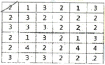
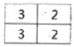
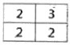
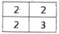
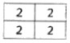
(정답률: 63%)
66. 디지타이징에 의한 수치지도 제작 시 발생할 수 있는 오차유형이 아닌 것은?
- 종이지도 신축에 의한 위치 오차
- 세선화(Thinning) 과정에의 형상 오차
- 선분 교차점에서의 교차 미달(Undershooting) 및 초과(Overshooting) 현상
- 인접 다각형의 경계선 중복 부분에서의 갭(Gap) 발생
(정답률: 52%)
67. 두 격자 자료의 입력 값이 각각 0과 1일 때, 각 논리연산자 OR, XOR, AND, NAND의 결과를 순서대로 옳게 표현한 것은? (단, 참일 때 1, 거짓일 때 0)
- 0-1-0-1
- 1-1-0-1
- 1-0-0-1
- 0-1-1-1
(정답률: 48%)
68. 지리정보시스템(GIS)이 운영되기 위해서는 위치, 시간, 속성 등의 요소가 고려되어야 하며, 그 중 시간은 부가적인 요소이지만 위치는 필수 불가결한 요소이다. 다음 중 정보에 위치를 할당하는 작업을 지칭하기 위해 통상적으로 사용되는 용어는?
- Geomatics
- Geo-Science
- Matching
- Georeferenece
(정답률: 61%)
69. 벡터데이터 저장 방식에 대한 설명으로 옳은 것은?
- 점, 선, 면을 단순한 좌표목록으로 저장하며 위상관계가 정의되지 않고 XY좌표로 데이터를 저장하는 스파게티(Spaghetti)모형 방식
- 동일한 속성값을 개별적으로 저장하는 대신 하나의 run에 해당되는 속성값이 한 번만 저장되고 run의 길이와 위치가 저장되는 Run-length code 방식
- 대상 지역에 하나 이상의 속성이 존재할 경우 4개의 동일한 면적으로 나누고, 이를 하나의 속성값만 남을 때까지 반복하여 저장하는 Quadtree방식
- 대상지역 공간객체의 경계를 시작점부터 각 방향에 대한 수치로 임의 부여하면서 표시하고 저장하는 Chain code 방식
(정답률: 50%)
70. 다음이 공통적으로 설명하는 단어는?
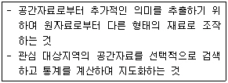
- 공간분석
- 네트워크 분석
- 위상분석
- 통계분석
(정답률: 55%)
71. 수치지형모형(DTM)으로부터 추출할 수 있는 정보로 가장 거리가 먼 것은?
- 경사분석도
- 가시권 분석도
- 사면방향도
- 토지이용현황도
(정답률: 67%)
72. 지리정보시스템(GIS)의 중첩분석방법 중 교통로와 도시팽창지역 사이의 관계를 설명하기 위하여 사용하는 방법으로 가장 적합한 것은?
- 폴리곤 간의 중첩
- 폴리곤과 점의 중첩
- 점과 점의 중첩
- 폴리곤과 선의 중첩
(정답률: 66%)
73. 지리정보시스템(GIS) 자료 취득방법 중 어느 것에 대한 설명인가?
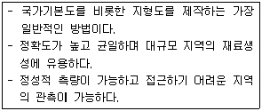
- 지상측량
- 항공사진측량
- GNSS 측량
- 레이저 측량
(정답률: 67%)
74. 지리정보시스템(GIS)에서 자료 분류 기준의 특성에 대한 설명으로 틀린 것은?
- Nominal 변수 : 토지이용항목과 같이 특정한 순서 없이 명칭으로 구분된다.
- Ordinal 변수 : 하천차수와 같이 고유등급이 있는 서로 분리된 항목으로 구분된다.
- Interval 변수 : 섭씨온도와 같이 자연적인 연속성이 있는 항목으로 구분된다.
- Ratio 변수 : Ordinal 변수와 같은 의미를 가지고 있으며 절대적인 시작점으로 구분된다.
(정답률: 47%)
75. 지리정보시스템(GIS)의 표준화에 대한 설명으로 옳지 않은 것은?
- SDTS는 GIS 표준 포맷의 예이다.
- 경제적이고 효율적인 GIS 구축이 가능하다.
- 하나의 기관에서 구축한 데이터를 많은 기관들이 공유하여 사용할 수 있다.
- 하드웨어(H/W)나 소프트웨어(S/W)에 따라 이용 가능한 포맷을 달리한다.
(정답률: 61%)
76. 래스터데이터(격자자료) 구조에 대한 설명으로 옳지 않은 것은?
- 셀의 크기에 관계없이 컴퓨터에 저장되는 자료의 양은 일정하다.
- 셀의 크기는 해상도에 영향을 미친다.
- 셀의 크기에 의해 지리정보의 위치정확성이 결정된다.
- 연속면에서 위치의 변화에 따라 속성들의 점진적인 현상 변화를 효과적으로 표현할 수 있다.
(정답률: 44%)
77. 유비쿼터스(ubiquitous)의 정의로 가장 적합한 것은?
- 시간과 장소에 구애받지 않고 언제 어디서나 원하는 정보에 접근할 수 있는 기술이나 환경
- 인공지능 컴퓨터와 로봇에 의하여 사람의 노동력이 최소화될 수 있는 기술이나 환경
- 사람들이 편안하고 행복하게 살 수 있는 복지사회 구현을 위한 이상적인 기술이나 환경
- GNSS와 GIS를 결합하여 4차원 정보관리를 할 수 있는 기술이나 환경
(정답률: 67%)
78. 지리정보시스템(GIS)에 대한 설명 중 틀린 것은?
- 인간의 의사결정능력의 지원에 필요한 지리정보의 관측과 수집에서부터 보존과 분석, 출력에 이르기까지 일련의 조작을 위한 정보시스템이다.
- 격자방식을 통해 벡터장식에 비해 정확한 경계선 추출이 가능하다.
- 지리정보는 GIS에서 대상으로 하는 모든 정보를 의미한다.
- 지리정보의 대표적인 항목은 지리적 위치, 관련 속성정보, 공간적 관계, 시간이다.
(정답률: 59%)
79. GIS소프트웨어 중에서 오픈소스 소프트웨어에 해당되는 것은?
- ArcGIS Desktop
- AutoCAD Map 3D
- GRASS GIS
- GeoMedia
(정답률: 57%)
80. 다음과 같은 데이터에 대한 위상구조 테이블로 적합한 것은?
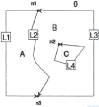
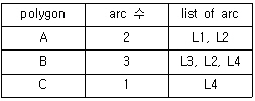
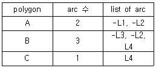
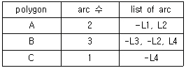
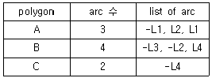
(정답률: 56%)
5과목: 측량학
81. 전자파 거리 측정기를 사용하여 측정한 결과가 아래와 같고, 이때 교차의 제한을 (10+D×2)mm(여기서, D: km 단위)로 할 경우 다음 중 옳은 것은? (단, D=4km)
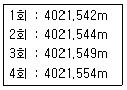
- 1회만 채측한다.
- 4회만 재측한다.
- 2회와 3회를 재측한다.
- 재측할 필요가 없다.
(정답률: 63%)
82. A, B 2점간의 고저차를 구하고자 그림과 같이 ㉠, ㉡, ㉢ 노선을 직접수준측량을 한 결과 다음과 같다. B점 표고의 최확값은?
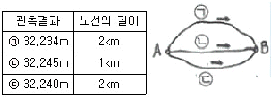
- 32.239m
- 32.240m
- 32.241m
- 32.245m
(정답률: 46%)
83. 직사각형 지역의 면적을 측량하기 위하여 가로(X), 세로(Y)의 길이를 관측한 결과가 X=50.26±0.016m, Y=38.54±0.0⑤m일 떄, 면적에 대한 표준오차(평균 제곱근 오차)는?
- ±0.33m2
- ±0.45m2
- ±0.56m2
- ±0.67m2
(정답률: 43%)
84. 각 측량기에서 기계점검이나 테스트 시 직교의 조건을 확인하여야 하는 3개의 축에 속하지 않는 것은?
- 편심축
- 시준축
- 수평축
- 연직축
(정답률: 50%)
85. 지형도 및 수치지형도에 대한 설명으로 옳지 않은 것은?
- 지형도는 지표면 상의 자연적 또는 인공적인 지형의 수평 또는 수직의 상호위치관계를 관측하여 그 결과를 일정한 축척과 도식으로 도면에 나타낸 것이다.
- 지형도상에 표시되는 요소로 지형에는 지물과 지모가 있다.
- 수치지형도의 축척은 일정하며 확대 및 축소하여 다양한 축척의 지형도를 만들기 어렵다.
- 수치지형도의 지형 및 지뮬은 레이어로 구분된다.
(정답률: 62%)
86. 30m의 줄자로 잰 거리가 218.13m 이었다. 그런데 이 줄자가 표준보다 5cm 늘어나 있는 것이었따면 실제거리는?
- 214.49m
- 217.77m
- 218.49m
- 221.77m
(정답률: 50%)
87. 삼각점 A에 기계를 설치하고 그림과 같이 B와 C를 관측하려 하는데 장애물 때문에 C를 시준할 수 없으므로 P를 관측하여 T'=48°34'26"를 얻었다면 T는? (단, e=5m, S=1267.65m, k=278°18'⑤")
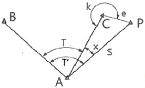
- 48°21'14"
- 48°21'01"
- 48°15'55"
- 48°04'37"
(정답률: 41%)
88. 점C와 D의 평면좌표를 구하기 위하여 기지 삼각점 A, B로부터 사변형삼각망에 의한 삼각측량을 실시하였다. 변조정에 앞서 각조정실시에 필요한 최소한의 조건식이 아닌 것은?
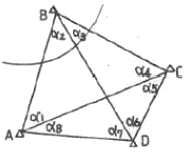
- α1+α2=α5+α6
- α1+α3+α5+α7=180°
- α3+α4 = α7 + αS
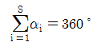
(정답률: 50%)
89. 수준측량에서 2km 구간을 왕복한 결과, 관측오차가 7mm 발생하였다면 처리방법으로 옳은 것은? (단, 수준측량의 허용오차=±2.5√Lmm)
- 오차가 크므로 재측하여야 한다.
- 큰 오차가 발생했다고 생각되는 곳에 분배한다.
- 허용오차 안에 들어가므로 그대로 인정한다.
- 결과를 평균하여 고저차를 결정한다.
(정답률: 52%)
90. 트래버스 측량에 의해서 높은 정확도가 요구되는 기준점의 위치를 결정하는 가장 좋은 방법은?
- 삼각점에서 다른 삼각점에 결합하는 트래버스
- 삼각점에서 동일 삼각점에 폐합하는 트래버스
- 정확도가 높은 삼각점에서 출발하는 개방 트래버스
- 임의 점에서 삼각점으로 결합되는 트래버스
(정답률: 47%)
91. 등고선의 성질에 대한 설명으로 옳지 않은 것은?
- 등고선 간의 최단거리 방향은 그 지표면의 경사변환선을 의미하며 등고선에 평행하다.
- 등고선은 등경사지에서는 등간격이며 등경사의 평면인 지표에서 등간격의 평행선을 이룬다.
- 급경사지에서는 완경사지보다 등고선의 간격이 좁다.
- 동일 등고선상의 모든 점은 같은 높이다.
(정답률: 57%)
92. 그림과 같은 결합 트래버스의 각측량 오차는? (단, ωa=20°01'27", ωb=310°48'31", 교각의 합 [a]=830°47'24")
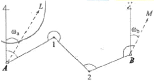
- 2"
- 10"
- 20"
- 30"
(정답률: 47%)
93. 표고가 118m와 145m인 두 점 사이의 수평거리가 250m 이며 등경사지일 때, 130m 등고선이 통과하는 지점과 118m 표고점의 수평거리는?
- 9.9m
- 102m
- 1⑤m
- 111m
(정답률: 55%)
94. 삼각점간 거리가 3km일 떄 관측한 수평각의 허용오차를 2“까지 허용한다면 시준점의 편심을 고려하지 않아도 되는 한도는?
- 2.1cm
- 2.9cm
- 4.4cm
- 8.7cm
(정답률: 43%)
95. 공공측량성과심사 수탁기관은 성과심사의 신청접수일로부터 통상적으로 며칠 이내에 심사결과를 통지해야 하는가?
- 10일
- 20일
- 30일
- 60일
(정답률: 54%)
96. 측량업의 종류에 해당하지 않는 것은?
- 기본측량업
- 공공측량업
- 연안조사측량업
- 지적측량업
(정답률: 38%)
97. 측량기준에서 국토교통부장관이 따로 정하여 고시하는 원점을 사용할 수 있는 ‘섬 등 대통령령으로 정하는 지역’에 해당되지 않는 곳은?
- 울릉도
- 거제도
- 독도
- 제주도
(정답률: 63%)
98. 공공측량시행자는 공공측량을 하기 며칠 전에 공공측량 작업계획서를 제출하여야 하는가?
- 3일
- 7일
- 15일
- 30일
(정답률: 58%)
99. 공간정보의 구축 및 관리 등에 관한 법률의 제정 목적과 거리가 먼 것은?
- 국토의 효율적 관리
- 국민의 소유권 보호
- 해상 교통안전의 기여
- 공간정보 구축 및 관리 기술의 향상
(정답률: 43%)
100. 국가공간정보 기본법에 따라 “지상ㆍ지하ㆍ수상ㆍ수중 등 공간상에 존재하는 자연적 또는 인공적인 객체에 대한 위치정보와 이와 관련된 공간적 인지 및 의사결정에 필요한 정보”로 정의되는 것은?
- 지리정보
- 속성정보
- 공간정보
- 지형정보
(정답률: 66%)